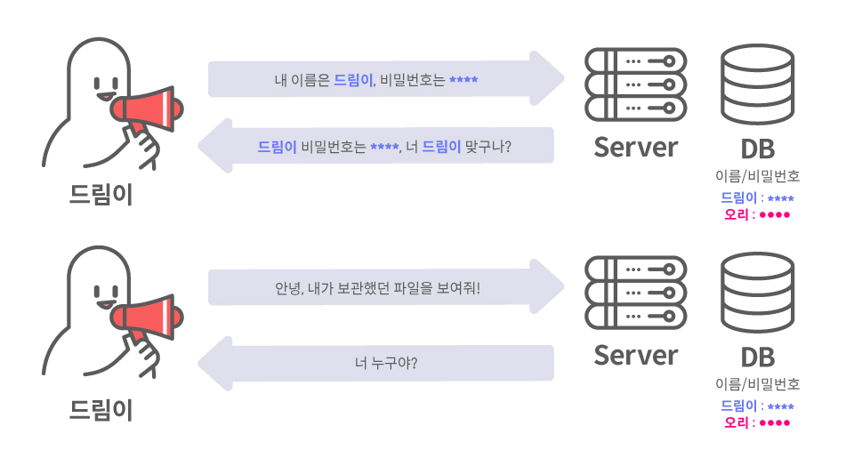
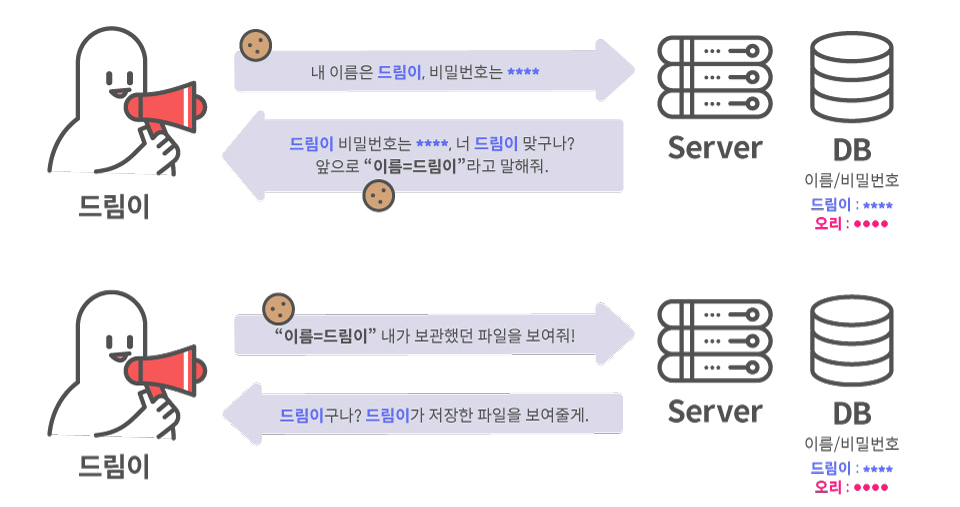
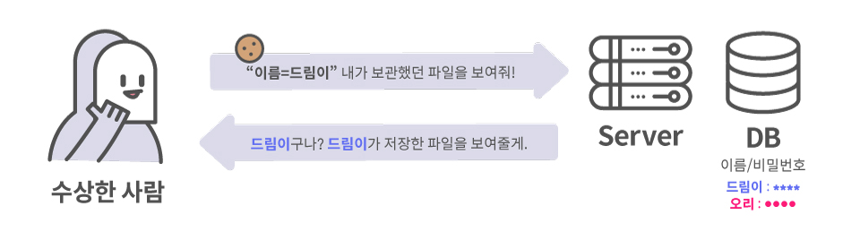
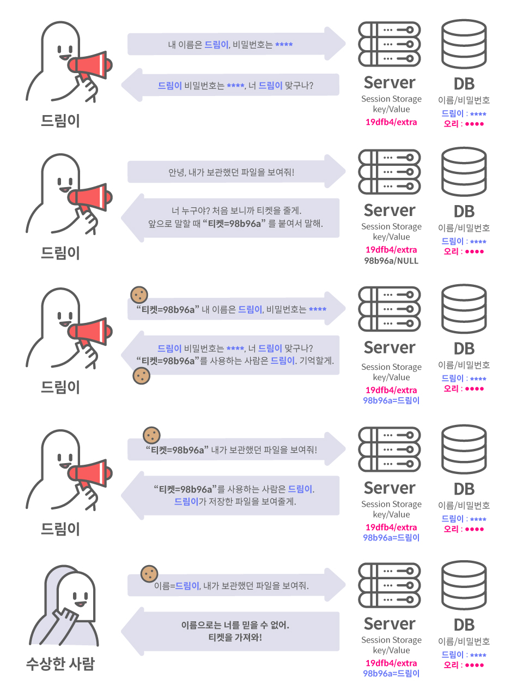

클라이언트의 IP 주소와 User-Agent는 매번 변경될 수 있는 고유하지 않은 정보이고, HTTP 프로토콜의 Connectionless와 Stateless 특징 때문에 웹 서버는 클라이언트를 기억 할 수 없다. 그래서 쿠키(Cookie)가 생겼다. 쿠키는 Key와 Value로 이워진 일종의 단위로, 서버가 클라이언트에게 쿠키를 발급하면, 클라이언트는 서버에 요청을 보낼 때마다 쿠키를 같이 전송한다. 서버는 클라이언트의 요청에 포함된 쿠키를 확인해 클라이언트를 구분할 수 있다.
하나의 요청에 하나의 응답을 한 후 연결을 종료하는 것을 의미한다.
특정 요청에 대한 연결은 이후의 요청과 이어지지 않고 새 요청이 있을 때마다 항상 새로운 연결을 맺는다.
통신이 끝난 후 상태 정보를 저장하지 않는 것을 의미한다.
이전 연결에서 사용한 데이터를 다른 연결에서 요구할 수 없다.
쿠기가 없는 통신은 요청을 보낸 클라이언트가 누군지 알 수 없기 때문에
현재 어떤 클라이언트와 통신하고 있는지 알지 못한다.

반면에 쿠기가 있는 통신은 클라이언트는 서버가 요청을 보낼 때마다 쿠키를 포함하고,
서버는 해당 쿠키를 통해 클라이언트를 식별한다.

쿠키는 클라이언트의 브라우저에 저장되고 요청에 포함되는 정보이다. 따라서, 아래 예시처럼 악의적인 클라이언트는 쿠키정보를 변조해 서버에 요청을 보낼 수 있다. 만약 서버가 별다른 검증 없이 쿠키를 통해 이용자의 인증 정보를 식별한다면 아래 그림과 같이 공격자가 타 이용자를 사칭해 정보를 탈취할 수 있다.
쿠키에 인증 상태를 저장하지만 클라이언트가 인증 정보를 변조 할 수 없게 하기 위해 세션(Session)을 사용한다. 세션은 인증 정보를 서버에 저장하고 해당 데이터에 접근할 수 있는 키(유추할 수 없는 랜덤한 문자열)를 만들어 클라이언트에 전달하는 방식으로 작동한다. 해당 키를 일반적으로 Session ID라고 한다. 브라우저는 해당 키를 쿠키에 저장하고 이후에 HTTP 요청을 보낼 때 사용한다. 서버는 요청에 포함된 키에 해당하는 데이터를 가져와 인증 상태를 확인한다.

서버는 브라우저의 쿠키에 저장된 세션 값으로 로그인 정보를 식별하는데 공격자가 이용자의 쿠키를 훔칠 수 있으면
세션에 해당하는 이용자의 인증 상태를 훔칠 수 있다. 이 행위를 세션 하이재킹이라고 한다.